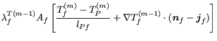
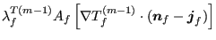

Next: Dissipation, pressure term and Up: Conservation of Energy (compressible Previous: Convection term Contents
For turbulent flow  in the energy equation has to be replaced by
in the energy equation has to be replaced by
 where
where
| (647) |
where
 is the turbulent Prandl number. Therefore, one now
arrives at:
is the turbulent Prandl number. Therefore, one now
arrives at:
![$\displaystyle \int_{A}^{} \lambda^T \frac{\partial T}{\partial n} da \approx \s...
...F}} + \nabla T_f ^{(m-1)} \cdot (\boldsymbol{n}_f - \boldsymbol{j}_f) \right ],$](img1924.png) |
(648) |
where
 and
and
 |
(649) |
 is the turbulence frequency. The dynamic turbulent viscosity
is the turbulence frequency. The dynamic turbulent viscosity  can be written as
can be written as
 .
.
The boundary conditions for the diffusion term amount to:
|  | (650) |
|  | (651) |
Either the temperature is given or the heat flux is given (may be zero as for adiabatic conditions). If the temperature is given the treatment is analogous to the case of an inlet, if the heat flux is given the solution is trivial since the diffusion term for an external surface is nothing else than the value of the heat flux through this surface.